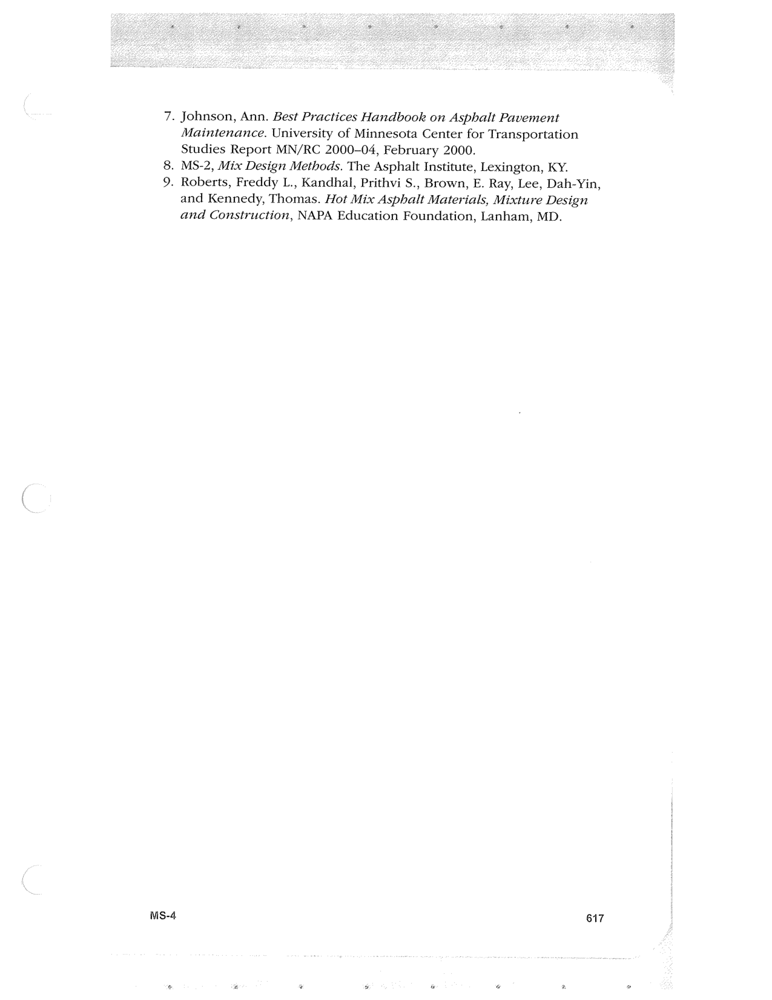

PDF page 651 · book page sequence 617


Searchable transcription
Unproofread OCR · 62 detected words; mean OCR confidence 95.11. Check technical values, symbols and table columns against the scan.
7. Johnson, Ann. Best Practices Handbook on Asphalt Pavement Maintenance. University of Minnesota Center for Transportation Studies Report MN/RC 2000-04, February 2000.
8. MS-2, Mix Design Methods. The Asphalt Institute, Lexington, KY.
9. Roberts, Freddy L., Kandhal, Prithvi S., Brown, E. Ray, Lee, Dah-Yin, and Kennedy, Thomas. Hot Mix Asphalt Materials, Mixture Design and Construction, NAPA Education Foundation, Lanham, MD.
MS-4 617